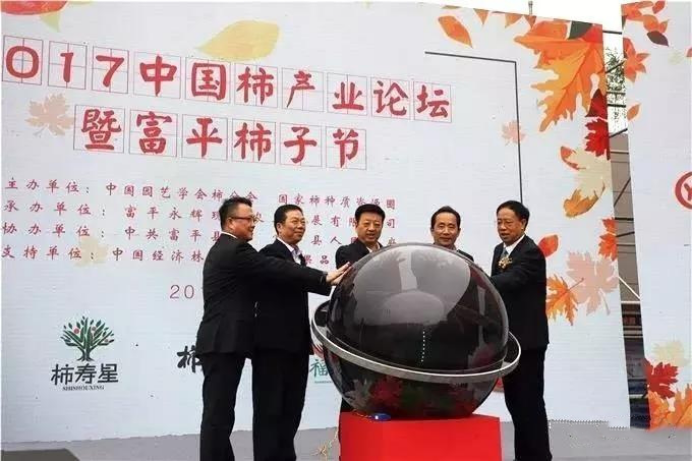
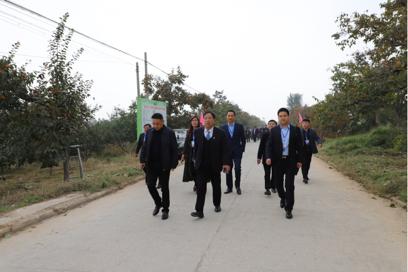
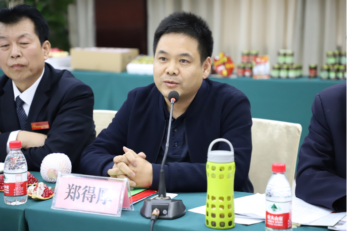
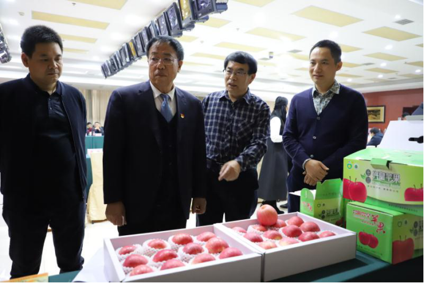
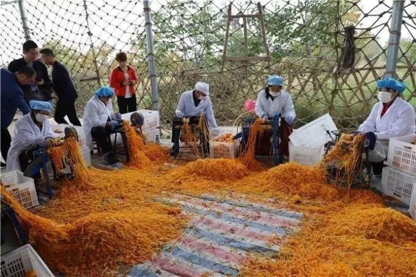
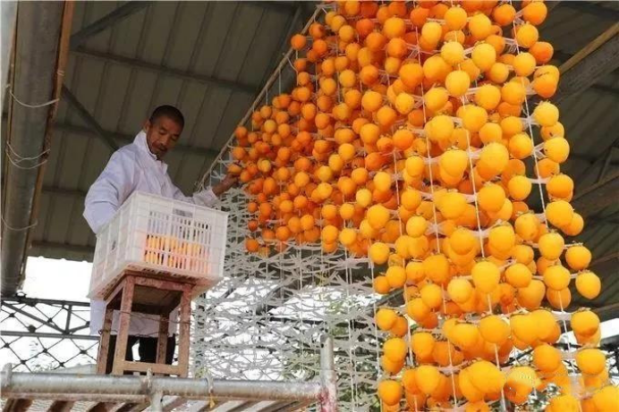

世纪联农总经理郑得厚应邀出席富平2017年中国柿产业论坛暨富平柿子节
2017-10-30
10月23日～24日，新发地市场董事长张玉玺、世纪联农（北京）农产品股份有限公司郑得厚总经理、北京悠乐果科技发展有限公司徐柱总经理一行20余人应邀出席2017年中国柿产业论坛暨富平柿子节，富平县副县长杨稳山、何大鹏、农业局局长李富平等领导全程陪同。陕西省、市政府领导及西北农林科技大学、省、市农业、林业、果业、商务、扶贫办等部门领导、渭南市各区县政府领导、国际国内知名柿子专家、全国柿子(饼)销售客商及电商运营平台代表等近千人参加了开幕式。

开幕仪式结束后，张玉玺董事长、郑得厚总经理一行在富平县农业局局长李富平等人的陪同下先后考察了庄里镇万亩柿子生态园、曹村镇柿子博物馆和柿子种植基地、到贤镇现代农业园、中哈人民友谊苹果园和樱桃种植基地、苹果种植基地、大桃种植基地。

10月24日，新发地张玉玺董事长、郑得厚总经理一行与渭南市委副书记、市长李明远渭南市所辖各县农业局、果业局、农业合作社等相关负责人展开业务对接和洽谈会议。

座谈会上，郑得厚总经理表示，通过本次活动，了解到渭南以及富平拥有这么多优质的农产品，尤其是苹果、柿子（饼）、花椒产业已经有了相当的规模，未来在调整种植结构、宣传优势品牌、促进产品入市方面继续深化改革，随着社会主义市场经济的发展，未来渭南及富平农产品行业必将焕发新的活力和生机。

据悉，富平是闻名世界的柿子优生区，柿子栽培历史悠久。富平尖柿最宜加工柿饼，被专家誉为“制饼珍品”。用富平尖柿制作而成的富平柿饼，具有个大、霜白、底色红亮、软糯黏润、香甜可口五大特色。早在明朝万历年间，就作为贡品进献皇帝;近年来不仅畅销国内大江南北，还出口韩国、日本、俄罗斯、新加坡等国家，深受消费者青睐。富平被国家林业局授予“中国柿乡”称号，富平尖柿被国家农业部评为地理标志保护产品。

